Protoestrellas: del filamento al disco
Cómo una nube fría se fragmenta, colapsa conservando su momento angular, forma un disco de acreción con jets, y se deja clasificar por su espectro en las clases 0, I, II y III — la biografía completa de una estrella antes de nacer, contada con Herschel, Spitzer, ALMA, JWST y simulaciones.
Las clases anteriores prepararon el escenario: el medio interestelar, las nubes moleculares y el sistema de refrigeración (CO y H₂) que permite el colapso gravitacional. Esta clase muestra qué se forma cuando el colapso avanza: la protoestrella y su disco de acreción. Es una historia donde la teoría llegó décadas antes que los datos — Jeans, Larson y los jets de Herbig-Haro se teorizaron entre los años 40 y 70, pero solo el infrarrojo y el radio (Herschel, Spitzer, ALMA, JWST) permitieron, en las últimas dos décadas, verlos. Hoy es uno de los campos más activos de la astronomía.
Repaso: el camino hasta la protoestrella
Medio difuso vs. nubes; las condiciones extremas que exige formar una estrella.
El módulo trata sobre la formación de estrellas, y todo parte en el medio interestelar: hidrógeno y helio principalmente, con apenas un ~2% en masa de elementos más pesados — de los cuales la mitad está solidificada en granos de polvo. Ese medio tiene fases, y la analogía del profesor es la atmósfera terrestre: hay un medio difuso (la «atmósfera») y hay nubes. La gran diferencia con las nubes terrestres es la densidad relativa:
| Medio | Densidad (partículas/cm³) | Referencia |
|---|---|---|
| Medio difuso | ~1 | «El número mágico»: vacío absoluto en términos terrestres |
| Nubes moleculares | 10³–10⁵ | Miles de veces más densas que el medio difuso |
| Umbral de formación estelar | 10⁵–10⁶ | Y temperatura de 10–20 K |
| Atmósfera terrestre | ~10¹⁹ | Inimaginablemente más densa que cualquier nube |
| Interior del Sol | ~10²⁴ | El otro extremo de la historia |
Una nube molecular comparada con el medio difuso sería como tener nubes de madera o de metal en la atmósfera terrestre. La analogía se rompe porque en la Tierra esas nubes caerían por gravedad hacia el centro; la Vía Láctea no es esférica ni tiene un «abajo», así que las nubes se mantienen en equilibrio de presión con el medio difuso.
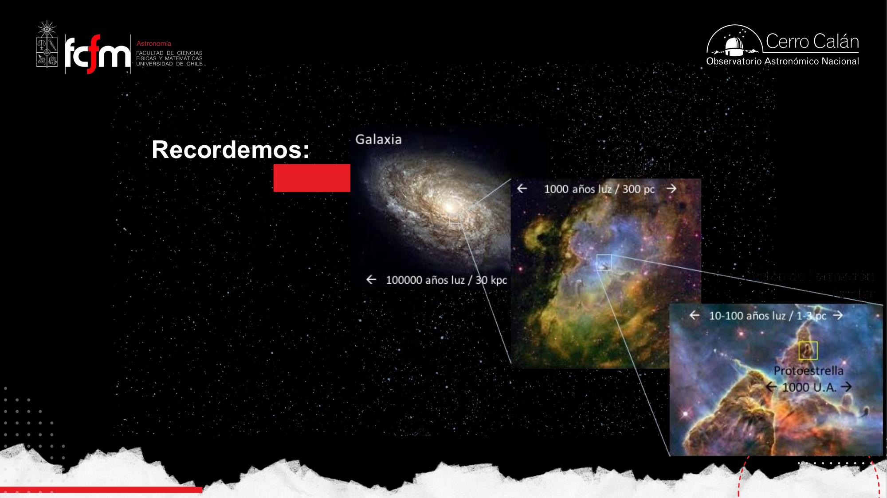
Para que una nube forme estrellas, deben cumplirse dos condiciones simultáneas: la temperatura debe bajar a ~10–20 K y la densidad debe subir a 10⁵–10⁶ partículas/cm³. Al bajar la temperatura ocurren dos cosas buenas: baja la presión (se le hace más fácil a la gravedad) y se favorece la formación de moléculas sobre los granos de polvo — las dos protagonistas: H₂ y CO.
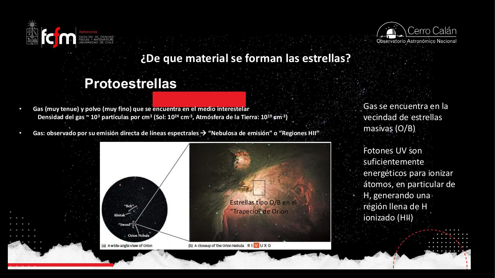
Cuando miras una imagen óptica de una galaxia, más del 99% de los fotones son luz estelar. Por más que parezca que ves gas o nubes brillando, lo que domina son estrellas. Las nubes moleculares (típicamente ~300 pc, unos mil años luz, las regiones grandes) se ven como siluetas oscuras contra ese fondo.
Mirar donde el óptico no llega
Cuerpo negro, ley de Wien y por qué la formación estelar es hija del infrarrojo y el radio.
Aquí el profesor hace una síntesis importante: la formación estelar es prácticamente inexistente para la astronomía óptica. La astronomía óptica tiene siglos (telescopios desde ~1700), pero la formación estelar ocurre dentro de nubes opacas y frías que el óptico no penetra. Para estudiarla se necesita infrarrojo y radio. ¿Por qué? Por la física del cuerpo negro.
Todo cuerpo con temperatura sobre el cero absoluto — nosotros incluidos — emite radiación en todas las longitudes de onda siguiendo la curva de Planck, cuyo máximo (peak) depende solo de la temperatura. Es la ley de desplazamiento de Wien:
- El Sol (~5.800 K): peak en el visual — por eso brilla en el óptico.
- Nosotros (~300–310 K): brillamos en el infrarrojo lejano. (36 °C ≈ 310 K; un paso en Celsius = un paso en Kelvin, pero Kelvin parte en −273 °C.)
- El polvo interestelar (~100 K o menos): emite en el infrarrojo lejano; en el óptico es prácticamente invisible.
- Para tener el peak en el infrarrojo cercano se necesita ~3.000 K: por eso el IR cercano sigue dominado por estrellas (es «la colita del óptico»).
Un objeto caliente emite en todas las longitudes de onda, incluso más infrarrojo que un objeto frío con peak en el IR. Pero como fracción de su emisión total, el IR de una estrella caliente es pequeñito: lo dominan el óptico y el UV. Por eso decimos que el IR de las estrellas es «despreciable» — es un argumento de fracciones, no de valores absolutos.
El problema extra: la atmósfera
Aunque tengas el telescopio adecuado, la atmósfera terrestre — sobre todo su vapor de agua — absorbe el infrarrojo medio y lejano. Recién en el submilimétrico/milimétrico («de frentón radioondas») vuelve a ser transparente. Las salidas:
- Satélites (carísimos: solo NASA, ESA y similares): Spitzer y Herschel, los dos grandes de la formación estelar.
- Sitios muy altos y muy secos: el norte de Chile, con cumbres sobre 5.000 m como Chajnantor (ALMA, TAO). Para el óptico lo que importa es la estabilidad atmosférica (el seeing); para el IR lejano/submm lo que importa es la sequedad del aire.
La ley de Wien funciona como un esquema de particionamiento por clave: la temperatura es la clave y la longitud de onda del peak es el shard donde «vive» la señal. Si buscas objetos de 10–100 K (formación estelar), consultar el shard del óptico es un full scan en la tabla equivocada: la señal está en el IR lejano y el submm. Y la atmósfera es un firewall que bloquea justo esos puertos — de ahí los satélites y Chajnantor.
El refrigerador molecular (síntesis de la clase 3)
Colapso isotérmico vía CO; opacidad; disociación del H₂; Población III.
El profesor repasa la cadena lógica completa de la clase anterior, porque es la base de todo lo que sigue. La gravedad de una nube depende de su masa y de su tamaño:
- Primer colapso (isotérmico, no adiabático). Un gas cualquiera se calentaría al contraerse y frenaría el colapso. Pero el CO actúa de radiador: los choques (la densidad va subiendo) excitan sus niveles de rotación (los niveles J, cuantizados porque la molécula lineal C–O tiene momento dipolar); al desexcitarse espontáneamente emite fotones de radio de baja energía que escapan de la nube. Calor que se va → la temperatura se mantiene → el colapso continúa.
- La nube se vuelve opaca. Cuando la densidad llega a ~10¹¹ partículas/cm³, las moléculas de CO están tan juntas que los fotones emitidos son atrapados por otras moléculas de CO antes de escapar. El radiador se tapa, la temperatura sube y el colapso se frena.
- Segundo colapso (el H₂ salva el día). Entre ~1.000 y 2.000 K los choques disocian el H₂. Como formar la molécula liberaba calor (exotérmica), separarla consume calor. Ese consumo desestabiliza la nube, que vuelve a contraerse — y ya es tan pequeña que la gravedad gana definitivamente.
¿Qué significa que la nube «se vuelve opaca»? Como moverse entre la gente: con 100 personas en el cerro te desplazas fácil; con 5.000 a mediodía, ir de un punto a otro es casi imposible. Eso les pasa a los fotones del CO cuando la densidad sube: se emiten, chocan con otra molécula, se reabsorben — ya no escapan.
Los fotones del CO son el extremo opuesto de los de la fusión. La cadena p-p en el núcleo estelar produce rayos gamma — lo más energético que existe. Pero a densidades de ~10²⁴ partículas/cm³ ese rayo gamma es absorbido «al tiro» por un electrón, que sale disparado, choca, reemite… y la energía llega a la superficie del Sol degradada a óptico. Mismo principio (fotones transportan energía), escalas de energía opuestas.
Cuando el universo era joven no había C ni O (ni polvo): no existían ni el CO ni los granos donde hoy se fabrica el H₂. Pero el universo era más denso, y el H₂ podía formarse en fase gaseosa — único mecanismo de enfriamiento disponible. Por eso las primeras nubes en colapsar debían ser gigantes: estrellas de 50–100 M☉, que vivieron poco y contaminaron el medio con los elementos pesados que hoy hacen posible la formación estelar «normal». Por algo hay carbono y oxígeno hoy.
Dato de contexto que el profesor subraya: el Sol no es una estrella masiva, pero está en el percentil 90 — el 90% de las estrellas tiene menos masa. Las estrellas de 5–10 M☉ o más son pocas (como las personas de más de 2 metros), pero importan muchísimo: emiten mucho flujo UV y mucha radiación mientras viven.
Masa de Jeans y glóbulos de Bok
¿Cuánta masa necesita una nube para colapsar? Depende de su temperatura y densidad.
James Jeans (teórico, primera mitad del siglo XX) atacó la pregunta con principios básicos: ¿en qué condiciones la gravedad le gana a la presión? Su resultado es la masa de Jeans o masa crítica: para una nube con cierta temperatura y densidad, existe una masa mínima sobre la cual el colapso es inevitable.
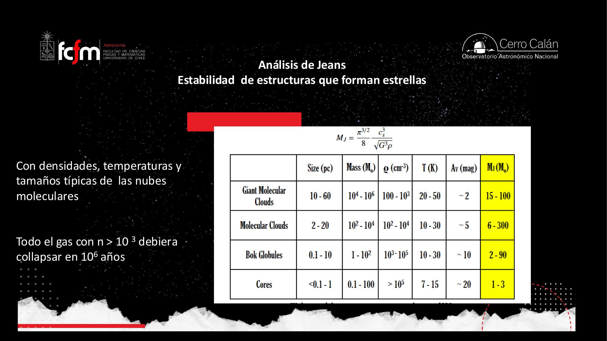
Bart Bok miraba placas fotográficas llenas de estrellas y encontraba manchas negras redondeadas que nadie sabía qué eran. Las catalogó y les llamó «glóbulos»; la comunidad las bautizó glóbulos de Bok. Hoy sabemos que son nubes moleculares muy densas — pequeñas incubadoras de estrellas de baja masa.
Las tablas de temperaturas y densidades «están en el PDF» para consultarlas cuando haga falta. El foco está en lo que vas a recordar en un par de años: que hay distintos tipos de nubes, que la clasificación refleja cómo se fueron observando, y que la masa crítica depende de las condiciones locales. Los números exactos se buscan; la estructura conceptual se aprende.
Filamentos: las estrellas nacen en grupo
Herschel y Spitzer; núcleos densos en estructuras filamentarias; por qué el Sol está solo.
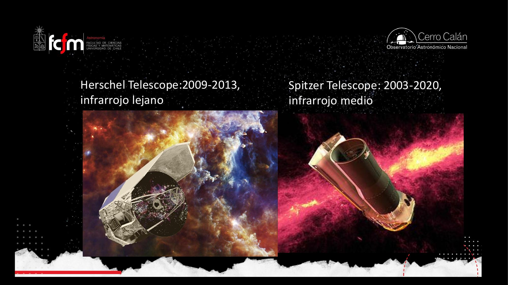
El gran descubrimiento de Herschel: las nubes moleculares no son las esferas limpiecitas de los modelos simples. Son redes complejas de filamentos, y la formación estelar ocurre en los núcleos densos (el término técnico es cores) que colapsan dentro de los fragmentos más densos de esos filamentos — por inestabilidad gravitacional, en muchos lugares a la vez.
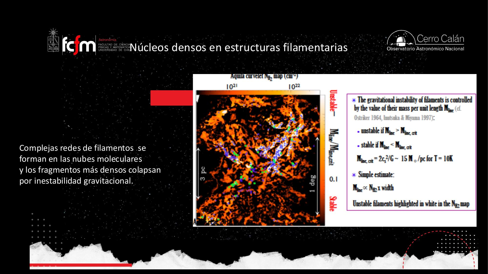
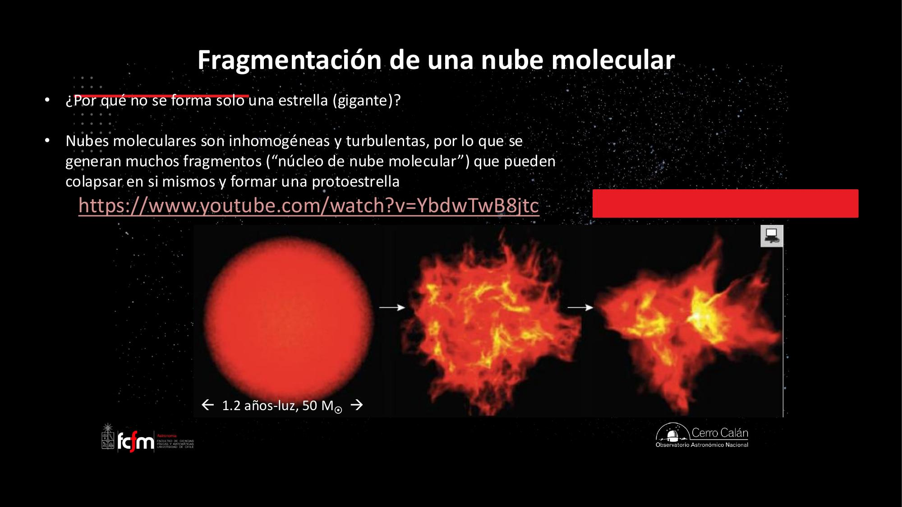
Consecuencia: la vida estelar es en comunidad
- Alrededor del 50% de las estrellas visibles a simple vista son en realidad sistemas binarios o múltiples (Sirio, por ejemplo, es múltiple; a ojo desnudo no se distingue). Del total de estrellas, la fracción es menor al 50%.
- Existen cúmulos abiertos — como las Pléyades — con decenas a cientos de estrellas jóvenes nacidas juntas, orbitando un centro de masa común. Se conocen ~4.000 en la Vía Láctea (se supone que hay muchos más).
- Y los cúmulos globulares, con medio millón a un millón de estrellas.
En la dinámica caótica de una nube que se fragmenta, algunos sistemas se vuelven dinámicamente inestables: una estrella puede ganar velocidad por interacciones gravitacionales — el mismo efecto honda (gravity assist) que usamos con las sondas en Júpiter o Saturno, o Artemis con la Tierra — y salir eyectada de su grupo natal. En las simulaciones se ve clarito: se forman montones de estrellitas y algunas salen disparadas. Esas quedan solas, como el Sol.
Mucho más allá de los planetas (~50 UA), el sistema solar está envuelto por la nube de Oort: un cascarón esférico de cometas apenas ligados al Sol. Si el Sol tuviera una compañera, muchos de esos objetos se desestabilizarían y caerían hacia adentro: bombardeo constante de cometas y asteroides, y la vida que surgiera tendría altas chances de extinguirse por colisiones. La soledad del Sol mantiene la nube de Oort quieta — y a nosotros tranquilos.
La fragmentación es un fork bomb controlado por umbrales locales: el colapso no es un proceso monolítico sino que cada región que supera su masa de Jeans local hace fork y colapsa en paralelo. Y la eyección de estrellas es un fenómeno emergente de un problema de N cuerpos: con 3+ cuerpos autogravitantes no hay solución cerrada, y las resonancias expulsan miembros — exactamente lo que explota un gravity assist, pero sin planificación.
Momento angular: el disco de acreción y los jets
Larson, el efecto patinadora, y por qué el colapso nunca es directo al centro.
Richard Larson (Universidad de Yale, años 60–70) razonó desde principios básicos: una nube que colapsa no puede haber estado perfectamente quieta. Algún grado de rotación tenía, por pequeño que fuera. Y eso significa que tiene momento angular — una cantidad que, en un sistema aislado, se conserva (igual que el momento lineal en un choque elástico).
Consecuencia geométrica: el colapso procede mucho más rápido a lo largo del eje de rotación que en el plano perpendicular (la rotación «sostiene» el material en el plano). El resultado inevitable es un disco de acreción — también llamado disco protoplanetario — que alimenta a la protoestrella central llevando material desde lejos hacia el centro. Larson lo teorizó cuando nada de esto podía observarse.
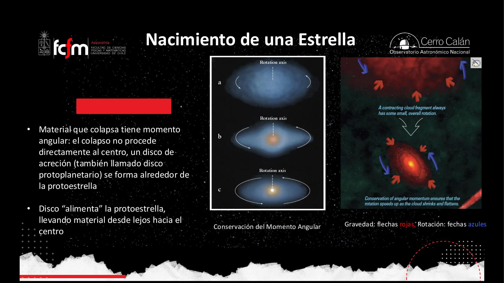
Jets: el campo magnético entra en escena
Si hay un campo magnético en la región que colapsa, sus líneas se mantienen aproximadamente verticales (perpendiculares al disco). Los campos magnéticos afectan a las partículas cargadas: el material ionizado del disco queda atrapado en las líneas de campo y — como traía momento angular — se mueve en espiral y sale eyectado por ambos polos. Eso son los jets bipolares, teorizados en los años 50 por George Herbig y Guillermo Haro (de ahí «objetos Herbig-Haro») y confirmados observacionalmente solo en las últimas décadas.
No. Los jets tienen mucha energía mecánica (alta velocidad), pero los fotones que emiten son de baja energía: radioondas en torno a ~5 GHz, por radiación libre-libre (free-free) o sincrotrón. «Alta energía» en el sentido cinético, no radiativo.
Clases 0–III: la biografía espectral de una protoestrella
La distribución espectral de energía (SED) como máquina del tiempo.
Cuando se apuntan radiotelescopios y telescopios IR a las nubes, se ven espectros «raros»: cuerpos negros corridos hacia longitudes de onda larguísimas, curvas con valles, estrellas con «colas» infrarrojas que no les corresponden. Para ordenarlos se usa la distribución espectral de energía (DEE, o SED en inglés): intensidad vs. longitud de onda, en escala logarítmica.
«Usamos escalas logarítmicas en la vida cotidiana sin saberlo: el ojo responde logarítmicamente, los decibeles son logarítmicos, los terremotos se miden en escala logarítmica.» Una escala log comprime: permite ver en un solo gráfico desde el UV hasta el radio.
El detalle crucial: nunca hemos visto a un solo objeto evolucionar (toma cientos de miles de años). Vemos muchos objetos distintos con espectros distintos, y el trabajo de los astrónomos es construir el modelo — disco + protoestrella + jets — que cuente una sola historia donde cada espectro es un fotograma. La secuencia se divide en clases:
| Clase | SED | Sistema físico | Edad típica |
|---|---|---|---|
| Clase 0 | Peak en ~100 µm; cuerpo negro frío (~10 K); domina el IR lejano | Nebulosa de polvo y gas; acreción intensa; envoltura ~0,5 M☉ | ~10⁴ años |
| Clase I | SED más plana; domina el IR medio; banda de silicatos en ~10 µm | Disco de acreción (~0,1 M☉) + protoestrella central; flujos bipolares | ~10⁵ años |
| Clase II | SED en descenso: cuerpo negro caliente + exceso IR del disco | Estrella T-Tauri clásica con disco visible (~0,01 M☉); ya disipó su envoltura | ~10⁶ años |
| Clase III | Cuerpo negro estelar casi puro; poco o ningún exceso IR | Pre-secuencia principal; disco de gas casi desaparecido; quedan escombros < 1 km | hasta ~4×10⁷ años |
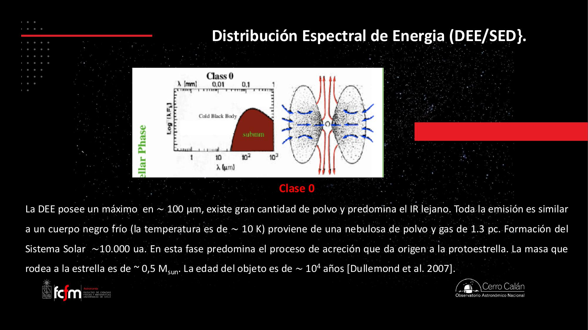
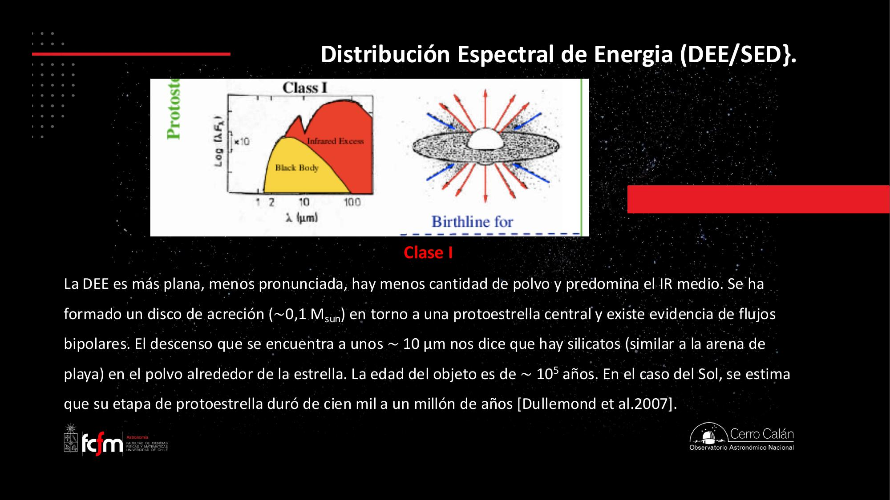
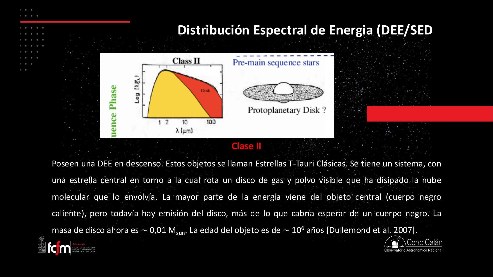
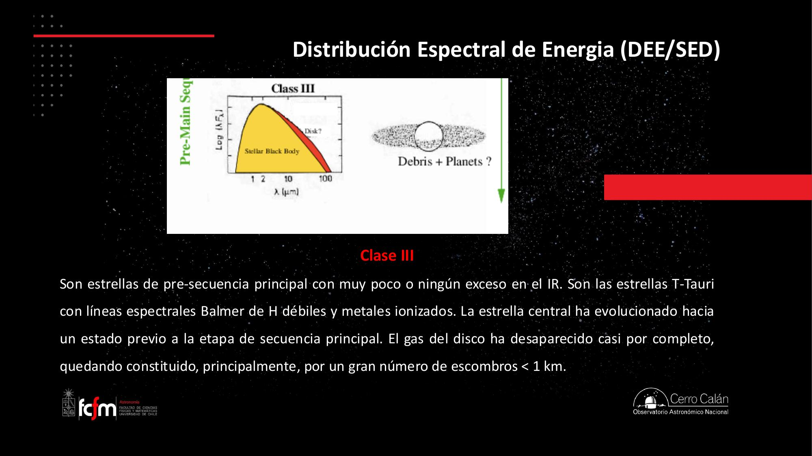
Depende a quién le preguntes. Los que estudian formación estelar dirían que el Sol nació en la clase 0; los que hacemos evolución estelar decimos que nace en la clase III, ya en la secuencia. Es como celebrar el nacimiento el día del parto, sabiendo que ya llevabas nueve meses vivo — hay culturas que cuentan desde la gestación. En total, formar una estrella como el Sol toma ~40 millones de años.
Dos protoestrellas de clase I y II pueden verse casi iguales en una imagen. La clase la define la SED: qué tan importante es la radiación del disco comparada con la del objeto protoestelar. Es como estimar la edad de una persona por el rostro: caras casi iguales, pero el ojo entrenado (o la radiografía — el espectro) distingue al de 30 del de 40.
Reconstruir la evolución desde fotogramas de objetos distintos es inferencia de un proceso a partir de snapshots no ordenados: como deducir el ciclo de vida de un request viendo logs de miles de requests distintos, cada uno capturado en una fase diferente. El modelo (disco + protoestrella + jet) es la máquina de estados que debe explicar todos los snapshots con una sola topología.
La era de ALMA y JWST: ver lo que se teorizó
Discos protoplanetarios, jets Herbig-Haro y hasta una estrella triple naciendo.
Lo que Larson, Herbig y Haro dibujaron en pizarras hoy se fotografía. ALMA permitió observar discos protoplanetarios reales desde ~2015 (HL Tau fue el hito: una protoestrella de ~2 M☉ con ~1 millón de años y un disco con anillos nítidos). «Hace 10 años esto existía solo como dibujos en los libros de texto.»
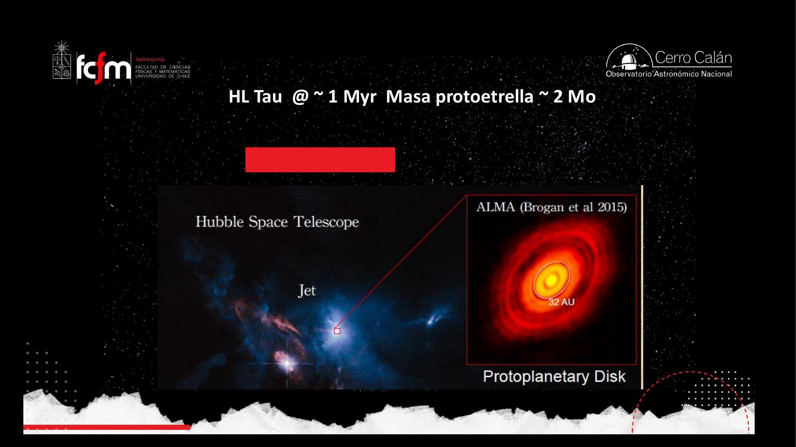
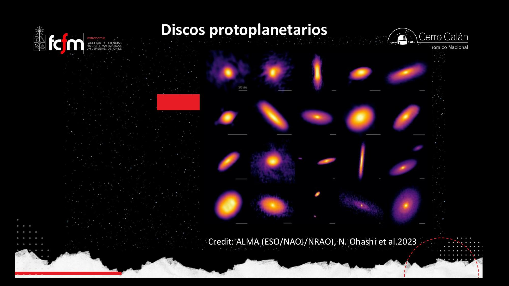
Objetos Herbig-Haro: los jets hechos visibles
El material eyectado por los jets viaja rapidísimo y choca con el medio interestelar circundante, excitándolo — «un poco como la aurora»: el choque genera transiciones electrónicas y rotacionales que brillan. Esos choques brillantes en los extremos de los jets son los objetos Herbig-Haro, teorizados en los 50 y confirmados en detalle en la última década.
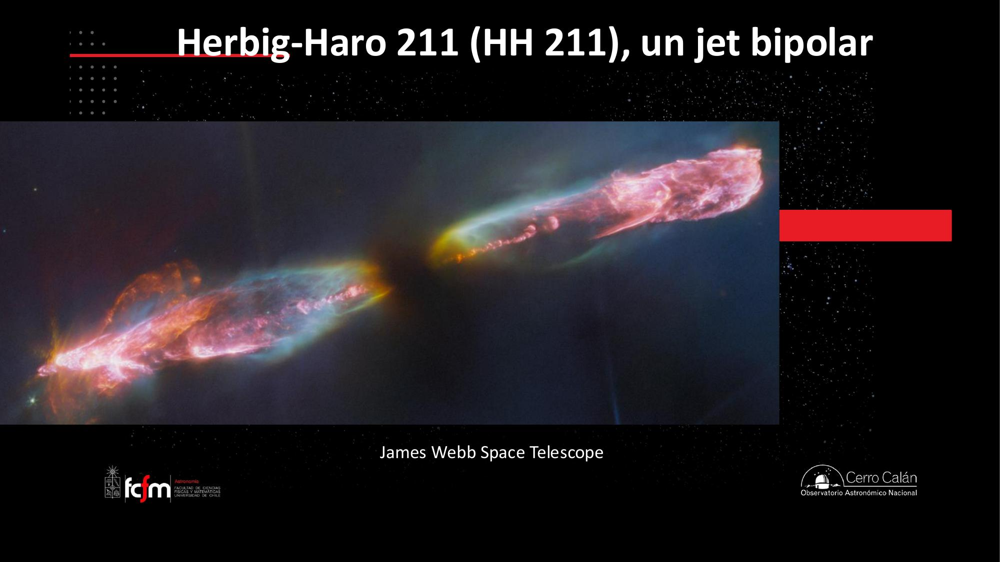
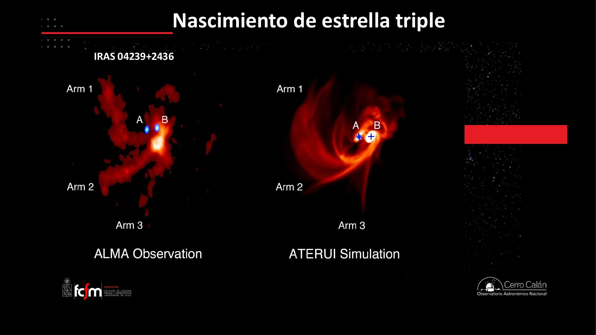
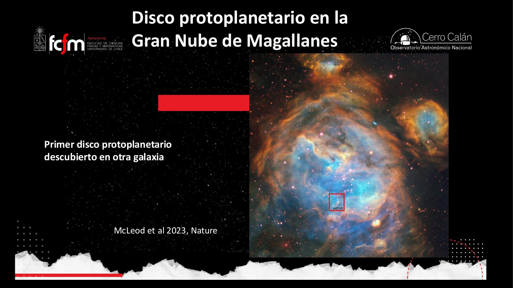
Simulaciones: formación estelar en el computador
Resolución espacial y temporal, magnetohidrodinámica y el límite de Eddington.
La astronomía teórica de hoy no es la pizarra de Jeans: es codificar las ecuaciones y correr simulaciones. El esquema es directamente computacional: se divide el espacio en cajitas (celdas) que interactúan entre sí vía gravedad y presión, intercambian temperatura y emiten radiación; luego se avanza el reloj un paso Δt y se recalcula todo.
- Resolución espacial: el tamaño de las cajitas. Las primeras simulaciones usaban celdas de ~1 parsec — todo el detalle de la formación estelar (que es sub-parsec) quedaba invisible. Más cajas chicas = más poder de cómputo.
- Resolución temporal: el tamaño del paso Δt. Pasos más cortos = más cálculos para cubrir el mismo intervalo físico.
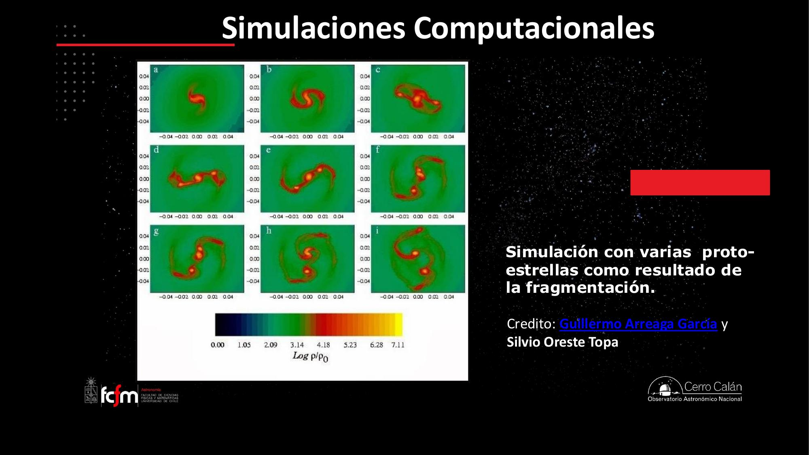
Las simulaciones «típicas» son de formación de estrellas no masivas. En estrellas masivas aparece un actor extra: la presión de radiación. Los fotones son partículas y ejercen presión; en estrellas de baja masa es despreciable frente a la presión térmica, pero una estrella masiva produce más fotones y más energéticos (el peak de su cuerpo negro se corre al UV y toda la curva sube). Esa presión pelea contra la gravedad y pone un límite superior a la masa estelar: ~50–100 M☉ según la metalicidad — el límite de Eddington. Por eso la comunidad se divide en formación de baja masa (la historia de esta clase) y de alta masa (otros mecanismos).
Mezclar todo lo anterior con campos magnéticos se llama magnetohidrodinámica (MHD) — «hasta el nombre es difícil; de las cosas más peludas que hay en astronomía». Normalmente los campos magnéticos «se esconden bajo la alfombra», pero a la escala de discos y jets ya no se puede: definen si se forman jets, cuánta masa pierde el sistema y cuál es la masa final de la estrella. «El diablo está en el detalle»: la misma nube con y sin campos magnéticos intensos termina en estrellas de masas distintas.
Las simulaciones de formación estelar son el caso de manual de simulación de grilla con paso temporal (como un CFD): complejidad ~O(N³) en celdas por dimensión espacial × pasos temporales. La «resolución de 1 pc» de los 90 es exactamente el problema de granularidad del muestreo: si el fenómeno vive bajo la resolución de la grilla, no es que se vea borroso — directamente no existe en la simulación. Y la MHD agrega términos acoplados no lineales: el costo de cada paso explota.
Coda: del disco a los planetas
Preguntas de estudiantes: qué decide los planetas que se forman, y el eslabón perdido.
Una estudiante preguntó de qué depende que un disco forme gigantes gaseosos o planetas rocosos. La respuesta del profesor — adelanto del curso de planetas — combina tres factores:
- El tipo de estrella: una estrella masiva y caliente emite tanto UV que evapora el material del disco (y además vive tan poco que apenas da tiempo). Una estrella fría y pequeña deja el material tranquilo por más tiempo — por eso los cazadores de planetas prefieren estrellas frías.
- La metalicidad: cuánto material pesado hay disponible para formar semillas (rocas de kilómetros).
- El gradiente de temperatura: lejos de la estrella hace frío y queda hidrógeno → una semilla con suficiente gravedad acreta gas y forma gigantes. Cerca, la temperatura y la presión de radiación solo permiten juntar material rocoso → planetas rocosos, como en el sistema solar.
La historia del crecimiento tiene un hueco famoso: se entiende cómo las motas de polvo se aglomeran (en el vacío, los sólidos pueden soldarse en frío espontáneamente — algo que el aire impide en la Tierra) hasta tamaños de una manzana o una pelota de tenis; y se entiende cómo objetos de 100–200 km crecen por gravedad. Pero entre medio — del durazno a la montaña — ni las fuerzas electromagnéticas ni la gravedad dominan claramente, y los choques tienden a romper en vez de pegar. Sabemos que algo lo resuelve («estamos parados arriba de un planeta»), pero el mecanismo exacto es área activa de investigación.
La formación estelar seguirá siendo un campo activo «al menos por un par de décadas»: ALMA y los telescopios infrarrojos en construcción por el lado observacional, y simulaciones cada vez más finas por el teórico. Spitzer y Herschel ya no operan, pero JWST está entregando imágenes como las de HH 211 — y el detalle del proceso (campos magnéticos, fragmentación, masas finales) sigue abierto.
Conceptos clave
Tabla de repaso rápido.
| Concepto | Qué es / valor | Por qué importa |
|---|---|---|
| Condiciones de formación | T ~ 10–20 K; n ~ 10⁵–10⁶ cm⁻³ | Solo ahí la gravedad le gana a la presión |
| Ley de Wien | λ_peak ≈ 2898 µm·K / T | Polvo frío (≤100 K) → IR lejano: el óptico no sirve para formación estelar |
| Ventanas atmosféricas | El vapor de agua absorbe el IR medio/lejano | Satélites (Spitzer, Herschel) o sitios altos y secos (Chajnantor) |
| Primer colapso | Isotérmico, no adiabático: el CO radia el calor en fotones de radio | La temperatura no sube y el colapso continúa |
| Opacidad a n~10¹¹ | Los fotones del CO quedan atrapados | Frena el colapso hasta que el H₂ se disocia (1.000–2.000 K) y lo reactiva |
| Masa de Jeans | Masa crítica para colapsar; baja con T baja y n alta | Todo gas con n > 10³ debiera colapsar en ~10⁶ años |
| Glóbulos de Bok | Nubes moleculares muy densas y frías (10–30 K) | Permiten formar estrellas de baja masa; historia de Bart Bok |
| Filamentos (Herschel) | Las nubes son redes filamentosas; los núcleos densos colapsan | La formación estelar es simultánea y en grupo |
| Estrellas en comunidad | ~50% de las visibles son binarias/múltiples; cúmulos abiertos y globulares | El Sol solitario es excepción — fue eyectado dinámicamente |
| Nube de Oort | Cascarón esférico de cometas apenas ligados al Sol | Una compañera estelar la desestabilizaría: bombardeo constante |
| Momento angular | L = mvr se conserva; r↓ → v↑ (efecto patinadora) | El colapso forma inevitablemente un disco de acreción (Larson) |
| Jets bipolares | Material ionizado atrapado en líneas de campo magnético, eyectado en espiral | Radiación libre-libre/sincrotrón ~5 GHz; energía mecánica, no radiativa |
| SED / DEE | Distribución espectral de energía: intensidad vs. λ (escala log) | Define las clases 0–III; se clasifica por espectro, no por apariencia |
| Clases 0→III | 0: polvo ~10 K, 10⁴ yr · I: disco+silicatos, 10⁵ yr · II: T-Tauri, 10⁶ yr · III: pre-SP, ~10⁷ yr | La biografía de la protoestrella; el Sol tardó ~40 Myr en total |
| Objetos Herbig-Haro | Choques de los jets contra el medio interestelar (HH 211, HH 797) | Teorizados en los 50, fotografiados por JWST |
| HL Tau / eDisk | Discos protoplanetarios resueltos por ALMA (desde ~2015); ~30–70 UA | De dibujos de libros a fotografías; brazos espirales = protoplanetas |
| Presión de radiación / Eddington | Los fotones empujan; limita la masa estelar a ~50–100 M☉ | Separa la formación de baja masa de la de alta masa |
| Resolución (simulaciones) | Espacial (tamaño de celda) y temporal (paso Δt) | Lo que vive bajo la resolución no existe en la simulación; MHD = lo difícil |
Exámenes de práctica
10 exámenes de 5 preguntas (3 de alternativas autocorregibles + 2 de respuesta escrita).
- Examen 01Repaso del medio interestelar
- Examen 02Cuerpo negro y ventanas
- Examen 03El refrigerador molecular
- Examen 04Masa de Jeans y Bok
- Examen 05Filamentos y vida en grupo
- Examen 06Momento angular y discos
- Examen 07Clases 0–III (SED)
- Examen 08ALMA, JWST y Herbig-Haro
- Examen 09Simulaciones y Eddington
- Examen 10Integrador